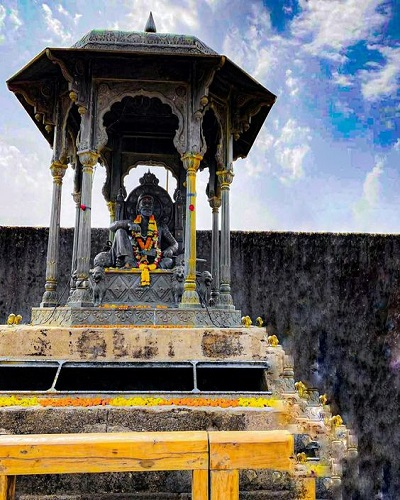
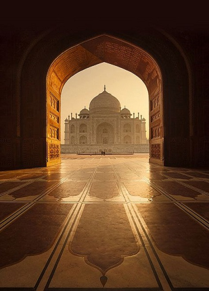
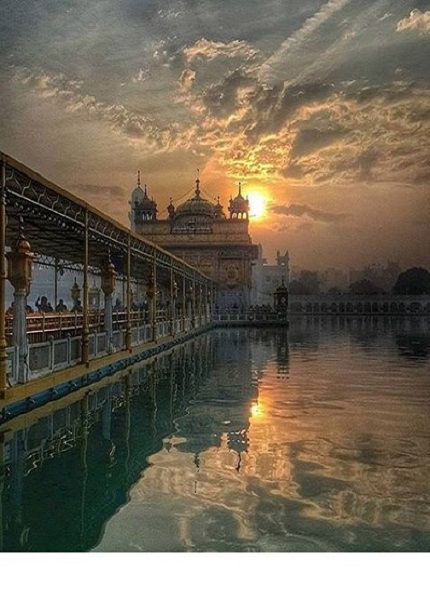
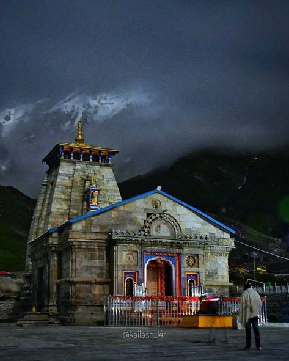
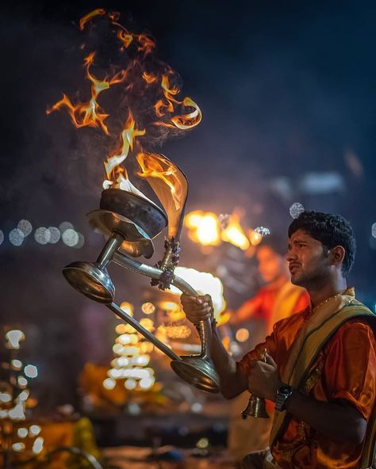
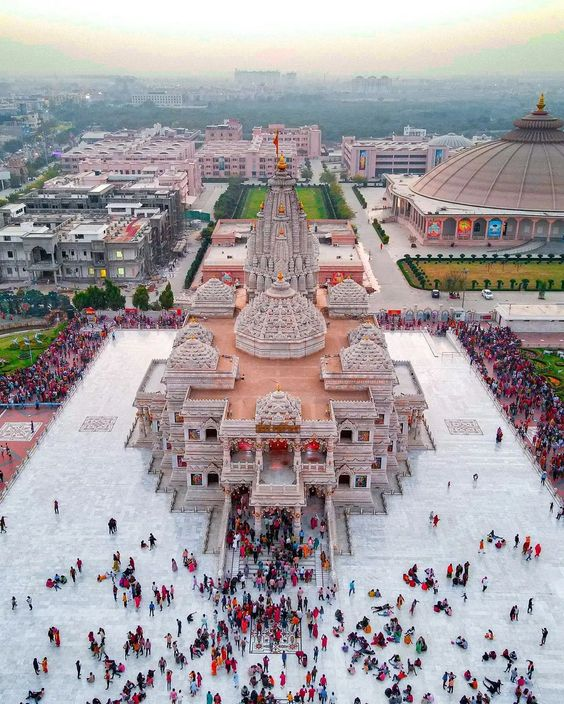
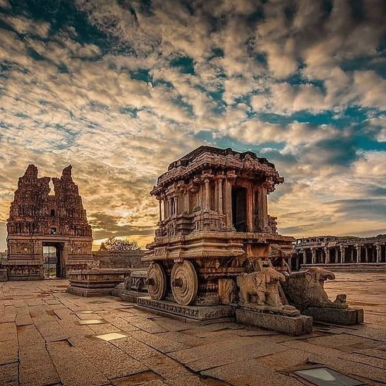
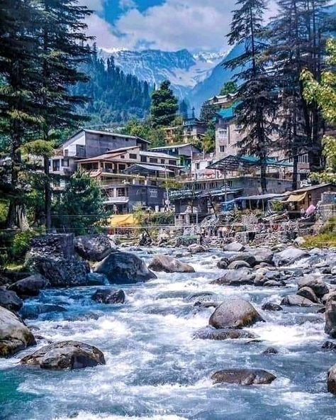

Raigad is a hill fort situated at about 25 Km from Mahad in the Raigad district. Chhatrapati Shivaji Maharaj renovated this fort and made it his capital in 1674 AD. The rope-way facility is available at Raigad Fort, to reach at the fort from ground in few minutes The fort also overlooks an artificial lake known as the ‘Ganga Sagar Lake’. The only main pathway to the fort passes through the “Maha Darwaja” (Huge Door). The King’s durbar inside the Raigad Fort has a replica of the original throne that faces the main doorway called the Nagarkhana Darwaja. This enclosure had been acoustically designed to aid hearing from the doorway to the throne. The fort has a famous bastion called “Hirakani Buruj” (Hirkani Bastion) constructed over a huge steep cliff.

The Taj Mahal is an ivory-white marble mausoleum on the south bank of the Yamuna river in the Indian city of Agra.It was commissioned in 1632 by the Shah Jahan (reigned from 1628 to 1658), to house the tomb of his wife, Mumtaz Mahal

The Golden temple is located in the holy city of the Sikhs, Amritsar. The Golden temple is famous for its full golden dome, it is one of the most sacred pilgrim spots for Sikhs. The Mandir is built on a 67-ft square of marble and is a two storied structure.

Kedarnath, a popular Hindu temple, tucked away in the lap of Garhwal Himalayas, some 221 km from Rishikesh in Uttarakhand, is one of the twelve Jyotirlinga temples of Lord Shiva. Lying against the backdrop of the magnificent Kedarnath Mandir Range, at an altitude of 3580 meters, the splendid Kedarnath Dham is where the devotees come seeking the blessings of Lord Shiva. Kedarnath Mandir is said to have been constructed by Adi Shankaracharya in the 8th century A.D. The nearby flowing Mandakini River, mesmerizing vistas and splendid sceneries in the form of the snow-clad mountains, rhododendron forests, and salubrious environment make Kedarnath Dham Yatra, a tranquil and picturesque place to be at.

Varanasi, also known as Kashi and Banaras, is one of the oldest continuously inhabited city on earth. Situated in Uttar Pradesh on the banks of river Ganga, Varanasi is among the most revered religious destinations in India. The city gets its name from two rivers — Varuna and Assi — which meet here. The word Kashi is derived from the word ‘Kas’ which means to shine. Varanasi is famous for the bathing ghats along the banks of river Ganga. Pilgrims throng these ghats to take a holy dip to wash themselves of their sins. Varanasi has been synonymous with the majestic river Ganga and its numerous rivulets. The Ganga Aarti held every evening at Dasashwamedha Ghat is a sight to behold.

Prem Mandir is a Hindu temple in Vrindavan, India. It is maintained by Jagadguru Kripalu Parishat, an international non-profit, educational, spiritual, charitable trust. The complex is on a 54-acre site on the outskirts of Vrindavan, and is dedicated to Lord Radha Krishna and Sita Ram.

Tourism in Hampi is famous for its ruins belonging to the erstwhile medieval Hindu kingdom of Vijayanagara, and it is declared a World Heritage site. The temples, monolithic sculptures, and monuments are a major part of Hampi tourism and attract travelers because of their excellent workmanship. The Hindu style of architecture found at Hampi reflects the splendor of the Vijayanagara Empire. The rugged landscape adds to the historic ambiance of this site. Go through the Hampi Karnataka tourism guide to plan your tour efficiently.

Manali is located in India’s northern State Himachal Pradesh. Manali is a most beautiful destination in India. It is located on the banks of the Beas River. It is a most beautiful hill station. Here you can enjoy many adventure activities. You can enjoy trekking, climbing, mountain biking, Paragliding, and skiing. There are many places to explore on this beautiful station. Manali attracts tourist from all over the world.
